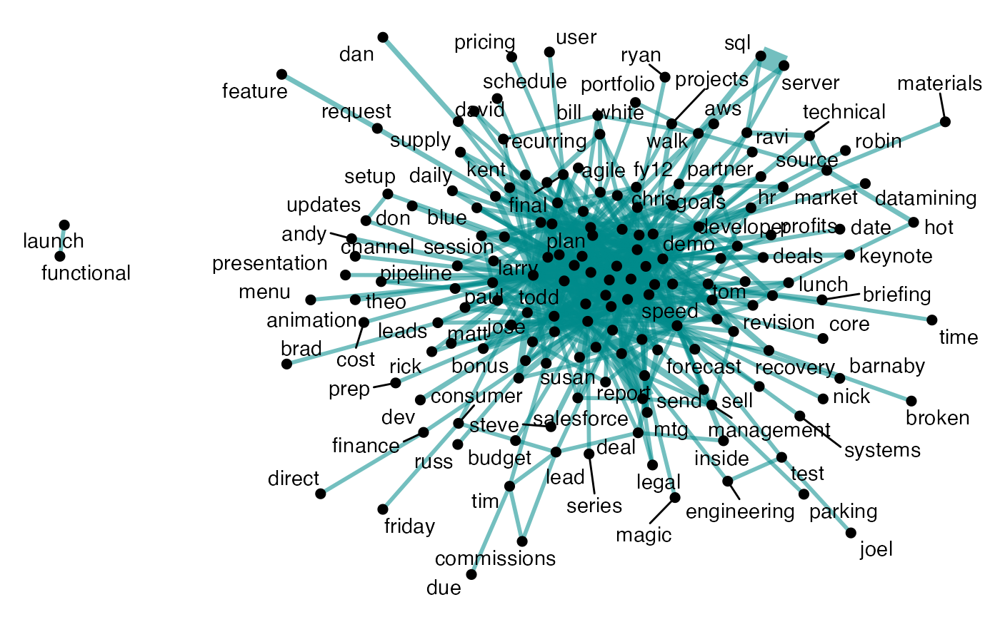
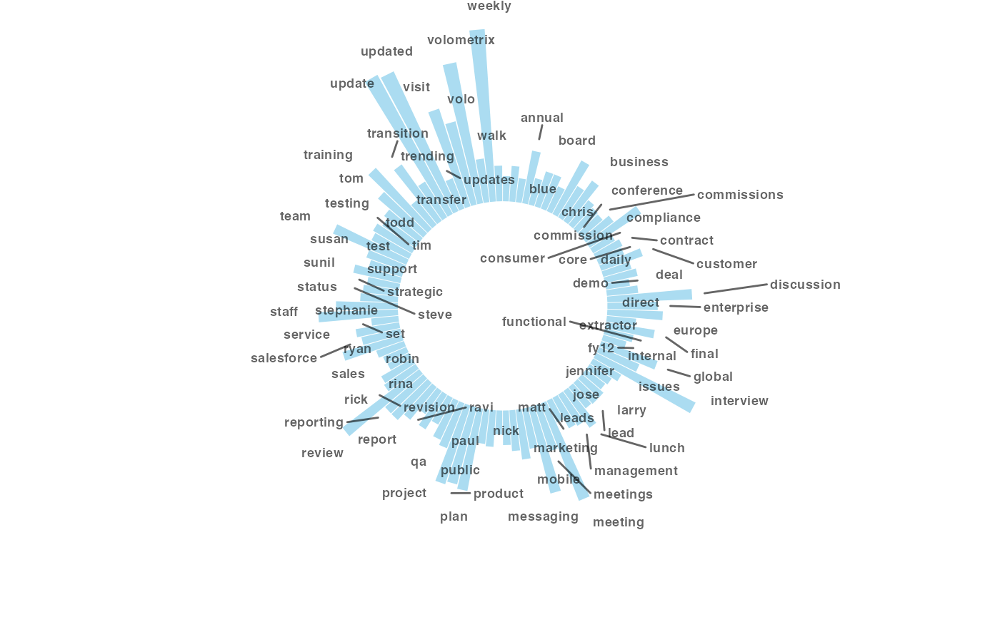
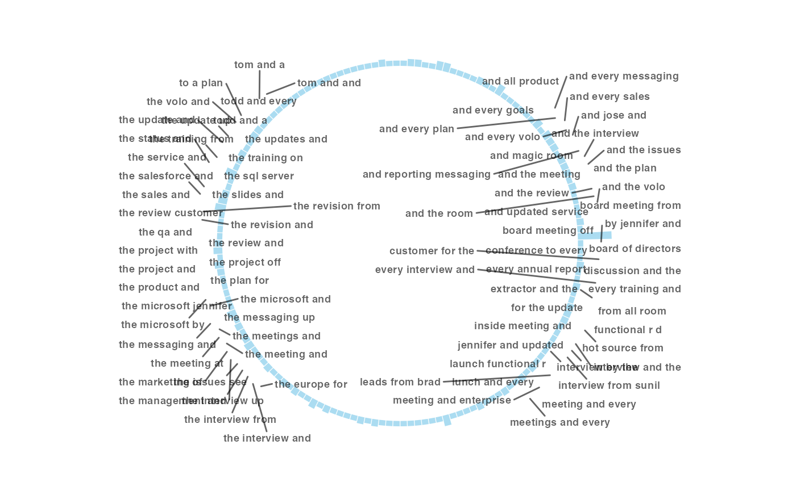

Text Mining Capabilities for Meeting Subject Lines
Martin Chan
2020-11-10
Source:vignettes/text-mining-capabilities.Rmd
text-mining-capabilities.RmdAbout
This post provides an introduction to the text mining capabilities for meeting subject lines in the wpa package.
Getting started
Loading the packages
The first step is to load the wpa package. We would also recommend loading tidyverse or its component packages for any handy data manipulation that you will need.
Loading the datasets
For subject line text mining analysis, you will require a meeting query. To load a dataset, we always recommend using import_wpa() as checks are run to ensure that the variables are of the right class. Here is an example of how to load in a CSV file called MeetingQuery.csv and assign it to an object called mt_df:
mt_df <- import_wpa("data/Meeting Query.csv")A couple of notes on the above:
- The above line of code provides a file path to the CSV file, loads it, and assigns it to
mt_df - You will need to update this with your own path, but remember that you must use forward slash (
/), not back slash (\) - If you are NOT using RStudio Projects: run
getwd()to check current working directory, usesetwd()to set current working directory
If you just wish to test out the examples on this post and don’t want to load in your own dataset (or you do not have access to one), you can also use the inbuilt demo dataset mt_data, which is essentially a Standard Meeting Query. For the subsequent examples, please substitute mt_data with mt_df if you wish to use your own data instead of the inbuilt demo dataset.
Word clouds
To create a word cloud with subject lines, you can run the following:
mt_data %>% tm_wordcloud(keep = 50) # Using the inbuilt demo dataset
The keep argument allows you to specify the maximum number of words to keep in the word cloud. The default value is 100, and in the above example we have changed it to 50. You can find out more from the documentation by prepending the function name with ?, such as ?tm_wordcloud.
Note that you can also return a summary table instead by adding return == "table":
mt_data %>% tm_wordcloud(keep = 50, return = "table") # Using the inbuilt demo dataset
## # A tibble: 50 × 2
## word freq
## <chr> <int>
## 1 weekly 165
## 2 update 151
## 3 updated 147
## 4 volometrix 137
## 5 interview 106
## 6 meeting 100
## 7 visit 98
## 8 review 92
## 9 messaging 85
## 10 volo 82
## # … with 40 more rowsCo-occurrence Network Plot
The key function for co-occurrence analysis is tm_cooc(). As its name suggest, this looks at whether pairs of words co-occur in the same subject line.
The following line of code generates a co-occurrence network plot:

Like tm_wordcloud(), you can also return a summary table as a data frame, instead of a plot:
mt_data %>% tm_cooc(return = "table")
## # A tibble: 539 × 3
## item1 item2 n
## <chr> <chr> <int>
## 1 board meeting 24
## 2 annual report 24
## 3 sql server 20
## 4 board directors 19
## 5 updated interview 15
## 6 weekly plan 13
## 7 volometrix interview 12
## 8 updated discussion 12
## 9 weekly messaging 10
## 10 weekly meeting 9
## # … with 529 more rowsCircular Bar Plot
You can also create a circular bar plot based on the frequency of the text.
With tm_freq(), you can choose to tokenize the text either as individual words or ngrams.
Words:

ngrams:

Remember that there is again, an option to return a summary table:
ngrams:
mt_data %>% tm_freq(token = "ngrams", return = "table")
## # A tibble: 158 × 2
## word n
## <chr> <int>
## 1 board of directors 19
## 2 and a status 6
## 3 r d and 6
## 4 the sales and 6
## 5 the status and 6
## 6 a project and 5
## 7 a sales and 5
## 8 and every messaging 5
## 9 and every sales 5
## 10 the board meeting 5
## # … with 148 more rowsMeeting Text Mining Report
The meeting_tm_report() function brings everything together: it will run a HTML report and save it in your current working directory.
You can simply run:
mt_data %>% meeting_tm_report() Subject Line Validation Report
If your objective is to validate your subject lines for common exclusion terms, you can run:
mt_data %>% subject_validate()
## [1] "[Warning] 63 meetings ( 3.1% of 2001 ) require your attention as they contain common exclusion terms."This does a check for common exlusion terms in subject lines, returning a string.
To run a full report, you can do:
mt_data %>% subject_validate_report() This runs a text mining report based on the common exclusion terms in subject lines.